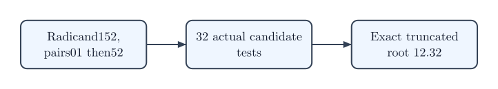
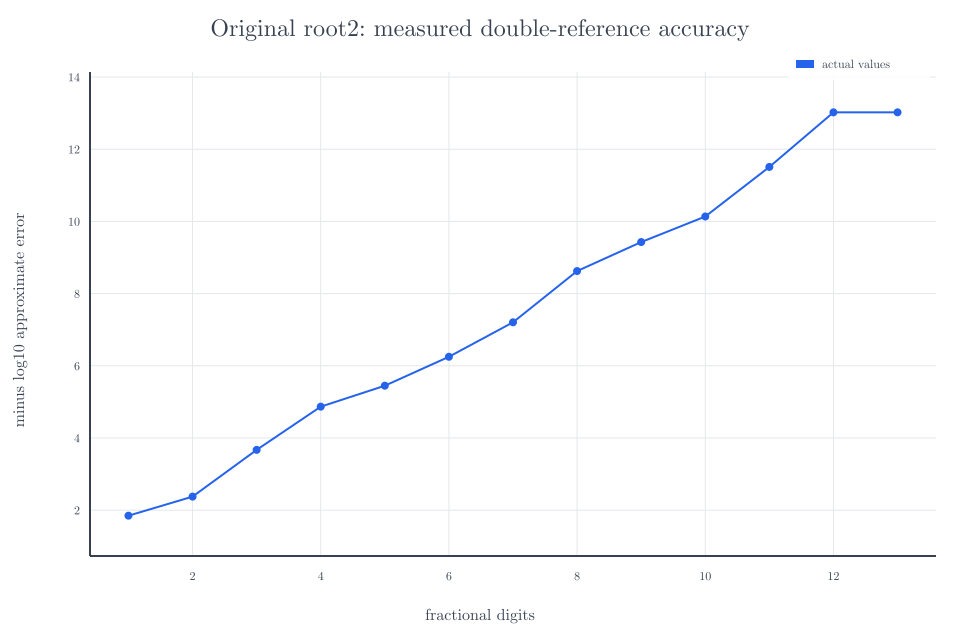
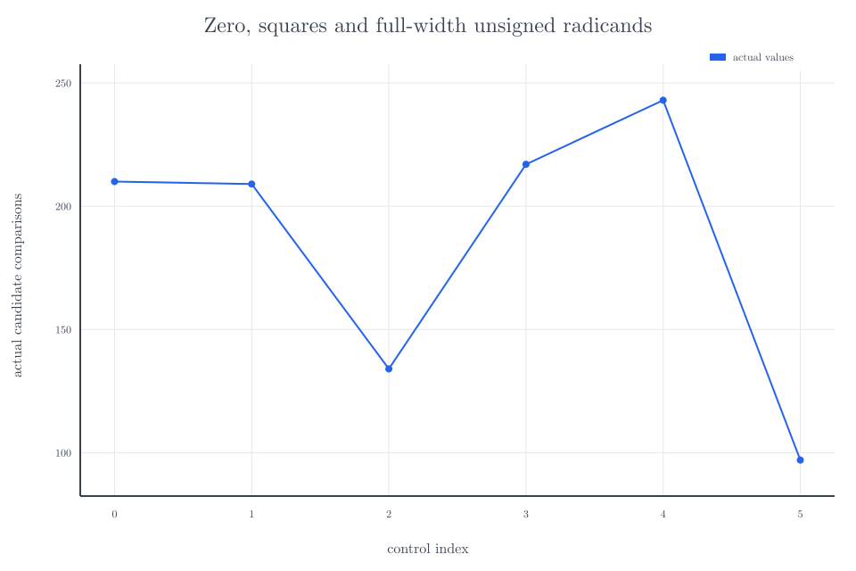
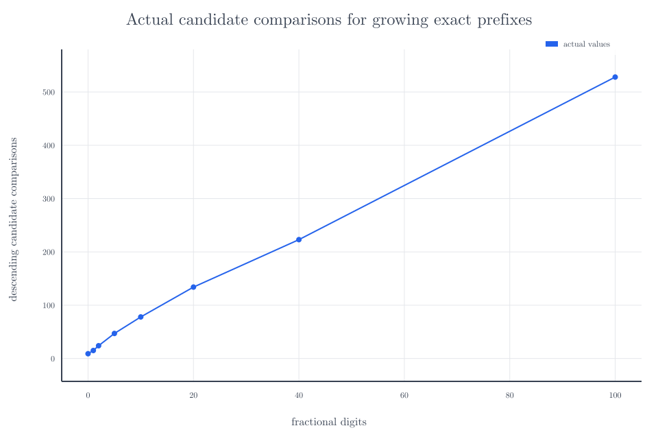

Square-root digits: actual exact prefixes and remainders
Abstract
An unsigned integer square root needs a decimal expansion with a known truncation direction. The classical paired-digit extraction chooses the greatest next digit whose square increment fits the remainder. We inspect actual exact integer states, retain the original roots and thirteen-digit accuracy experiment, and remove fixed-width prefix overflow.
Mechanism and mathematical scope
Group the radicand into decimal pairs, padding a leading zero when needed. Bring each pair down by multiplying the remainder by100; after the integer pairs, bring down zero pairs for fractional digits. If R is the current root prefix, the next candidate digit d changes its square by
Choose the largest fitting digit0..9, subtract this exact increment and append it. Induction preserves nonnegative remainder and gives the greatest prefix whose square does not exceed the brought-down radicand. After f fractional digits, the point-free output is floor(sqrt(n)*10^f). Thus
The error bound improves by a factor ten per digit; the observed error need not shrink by exactly that factor at every step. Arbitrary-precision root, product and remainder values avoid historical uint64 overflow. At most ten candidate comparisons are made per emitted digit, but their integer bit cost grows with the prefix. Displayed double comparisons are approximate references, not exact correctness certificates.
A tiny actual producing history
The table and native concept diagram read the same producing execution. Every block below is a complete editable C++ program.
#include <dm/dm.hpp>
int main() {
namespace a = dm::algorithms;
namespace g = dm::graphics;
std::filesystem::create_directories("build");
auto r = a::sqrt_digits_trace(152, 2);
std::print("| actual step | pair brought down | selected digit | actual integer root prefix | exact " "remainder |\n| ---: | ---: | ---: | --- | --- |\n");
for (const auto &s : r.history)
std::print("| {} | {} | {} | `{}` | `{}` |\n", s.step, s.pair, s.digit,
s.prefix, s.remainder);
g::Diagram concept_diagram(48, 1100);
concept_diagram.node("n0", {0, 0}, "Radicand152, pairs01 then52");
concept_diagram.node("n1", {5, 0},
std::format("{} actual candidate tests",
r.candidate_tests));
concept_diagram.node("n2", {10, 0},
std::format("Exact truncated root {}", r.digits));
concept_diagram.edge("n0", "n1").edge("n1", "n2");
concept_diagram.save_svg("build/sqrt_digits_tiny.svg");
}| actual step | pair brought down | selected digit | actual integer root prefix | exact remainder |
|---|---|---|---|---|
| 0 | 1 | 1 | 1 | 0 |
| 1 | 52 | 2 | 12 | 8 |
| 2 | 0 | 3 | 123 | 71 |
| 3 | 0 | 2 | 1232 | 2176 |

The retained original experiment
#include <dm/dm.hpp>
int main() {
namespace a = dm::algorithms;
namespace g = dm::graphics;
std::filesystem::create_directories("build");
std::print("| original radicand | fractional digits | actual exact truncated string |\n| ---: | ---: | " "--- |\n");
for (const auto & [n, f] : std::vector<std::pair<std::uint64_t, int>> {
{ 2, 12 }, {152, 8}, {144, 4}, {2025, 4}
})
std::print("| {} | {} | `{}` |\n", n, f, a::digit_by_digit_sqrt(n, f));
std::vector<double> x, y;
std::print("\n| original fractional count | actual root2 string | approximate double absolute error " "|\n| ---: | --- | ---: |\n");
for (int f = 1; f <= 13; ++f) {
const auto text = a::digit_by_digit_sqrt(2, f);
const double error = std::abs(std::stod(text) - std::sqrt(2.));
std::print("| {} | `{}` | {} |\n", f, text, error);
x.push_back(f);
y.push_back(error > 0 ? -std::log10(error)
: std::numeric_limits<double>::quiet_NaN());
}
auto plot = g::RPlot::create();
plot.lines(x, y, "actual values", {37, 99, 235}).points(x, y, {37, 99, 235},
4).title(
"Original root2: measured double-reference accuracy").x_label(
"fractional digits").y_label("minus log10 approximate error");
plot.save_svg("build/sqrt_digits_original.svg");
}| original radicand | fractional digits | actual exact truncated string |
|---|---|---|
| 2 | 12 | 1.414213562373 |
| 152 | 8 | 12.32882800 |
| 144 | 4 | 12.0000 |
| 2025 | 4 | 45.0000 |
| original fractional count | actual root2 string | approximate double absolute error |
|---|---|---|
| 1 | 1.4 | 0.014213562373095234 |
| 2 | 1.41 | 0.004213562373095225 |
| 3 | 1.414 | 0.00021356237309522186 |
| 4 | 1.4142 | 1.3562373095243885e-05 |
| 5 | 1.41421 | 3.5623730951783728e-06 |
| 6 | 1.414213 | 5.623730952031281e-07 |
| 7 | 1.4142135 | 6.237309513323908e-08 |
| 8 | 1.41421356 | 2.3730950537981244e-09 |
| 9 | 1.414213562 | 3.730951103619873e-10 |
| 10 | 1.4142135623 | 7.309508553987598e-11 |
| 11 | 1.41421356237 | 3.0950797480500114e-12 |
| 12 | 1.414213562373 | 9.50350909079134e-14 |
| 13 | 1.4142135623730 | 9.50350909079134e-14 |

Explicit controls
#include <dm/dm.hpp>
int main() {
namespace a = dm::algorithms;
namespace g = dm::graphics;
std::filesystem::create_directories("build");
std::vector<double> x, y;
std::print("| radicand | actual20-digit truncated root | actual candidate tests |\n| ---: | --- | ---: " "|\n");
for (const std::uint64_t n : {std::uint64_t{0}, std::uint64_t{1},
std::uint64_t{2}, std::uint64_t{144},
std::uint64_t{18446744065119617025ULL},
std::numeric_limits<std::uint64_t>::max()}) {
auto r = a::sqrt_digits_run(n, 20);
std::print("| {} | `{}` | {} |\n", n, r.digits, r.candidate_tests);
x.push_back(x.size());
y.push_back(r.candidate_tests);
}
auto plot = g::RPlot::create();
plot.lines(x, y, "actual values", {37, 99, 235}).points(x, y, {37, 99, 235},
4).title(
"Zero, squares and full-width unsigned radicands").x_label(
"control index").y_label("actual candidate comparisons");
plot.save_svg("build/sqrt_digits_controls.svg");
}| radicand | actual20-digit truncated root | actual candidate tests |
|---|---|---|
| 0 | 0.00000000000000000000 | 210 |
| 1 | 1.00000000000000000000 | 209 |
| 2 | 1.41421356237309504880 | 134 |
| 144 | 12.00000000000000000000 | 217 |
| 18446744065119617025 | 4294967295.00000000000000000000 | 243 |
| 18446744073709551615 | 4294967295.99999999988358467817 | 97 |

Actual selected work and sensitivity
#include <dm/dm.hpp>
int main() {
namespace a = dm::algorithms;
namespace g = dm::graphics;
std::filesystem::create_directories("build");
std::vector<double> x, y;
std::print("| fractional digits | actual emitted digit steps | candidate tests | ten-per-step upper " "reference |\n| ---: | ---: | ---: | ---: |\n");
for (int f : {0, 1, 2, 5, 10, 20, 40, 100}) {
auto r = a::sqrt_digits_trace(2, f);
std::print("| {} | {} | {} | {} |\n", f, r.history.size(),
r.candidate_tests, 10 * r.history.size());
x.push_back(f);
y.push_back(r.candidate_tests);
}
auto plot = g::RPlot::create();
plot.lines(x, y, "actual values", {37, 99, 235}).points(x, y, {37, 99, 235},
4).title(
"Actual candidate comparisons for growing exact prefixes").x_label(
"fractional digits").y_label("descending candidate comparisons");
plot.save_svg("build/sqrt_digits_work.svg");
}| fractional digits | actual emitted digit steps | candidate tests | ten-per-step upper reference |
|---|---|---|---|
| 0 | 1 | 9 | 10 |
| 1 | 2 | 15 | 20 |
| 2 | 3 | 24 | 30 |
| 5 | 6 | 47 | 60 |
| 10 | 11 | 78 | 110 |
| 20 | 21 | 134 | 210 |
| 40 | 41 | 223 | 410 |
| 100 | 101 | 528 | 1010 |

API and interpretation
Fractions are truncated, never rounded, and the point is retained at zero requested fractional digits. Zero radicand gives requested zeros. Negative counts fail before computation; complete digit and copied-history character policies are explicit. Correctness is checked with exact integer inequalities or integer square roots, since a parsed double cannot certify arbitrarily many decimal digits.
Reusable producers, fixtures and histories live in the canonical C++ library. Captured records own their values and do not come from a separate report replay. Selected counters and record/scalar policies are specified at their API boundaries; they are not peak-byte or wall-time budgets. Synthetic structural inputs are controlled fixtures for these mechanisms.
References
- Classical paired-digit extraction; square-increment derivation above
Verified in the shared ten-document batch: 67 scoped native cases and9 formatter
cases;20 directly instrumented ASan/UBSan cases;87 executable public
examples;402/402 full-file definitions across29 scopes;10 hovers;10569
independent records/108541 checks;frozen comparisons across all ten families
with density-rank, long-prefix arithmetic, initial residual and complete-input
corrections recorded;15 checkout/installed standalone headers and linked
ten-family consumer;40 executed programs and40 inspected figures with both
exports. Receipts: build/mepml-conversion/batch-364-373/.